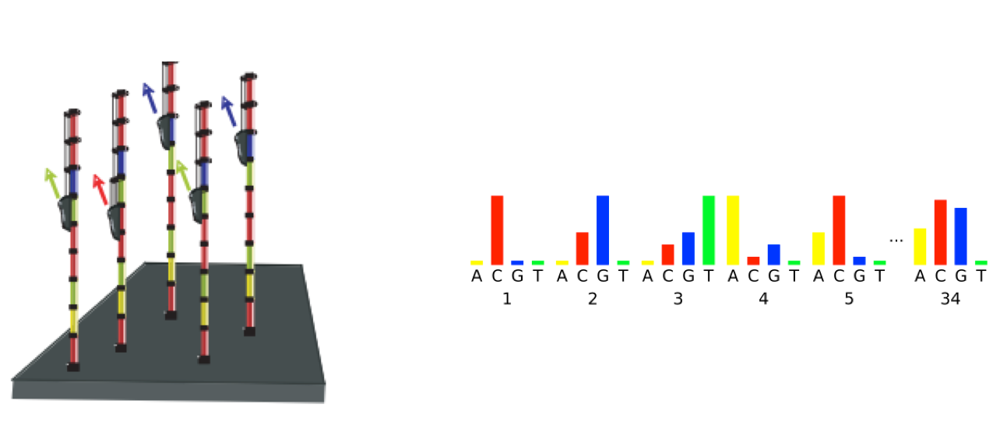
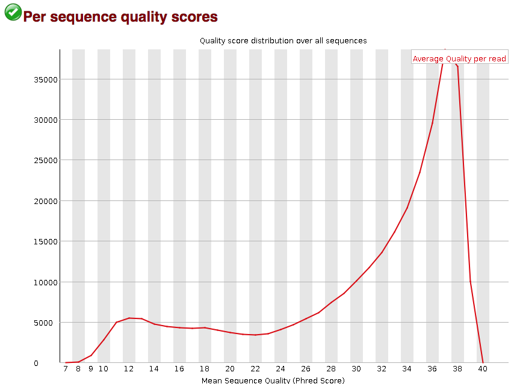

Learning Objectives:
- Evaluate the quality of your NGS data using FastQC
Assessing the results from FastQC
For each individual FASTQ file that is input to FastQC, there are two output files that are generated.
$ ls -lh ~/rnaseq/results/fastqc/
- The first is an HTML file which is a self-contained document with various graphs embedded into it. Each of the graphs evaluate different quality aspects of our data, we will discuss in more detail in this lesson.
- Alongside the HTML file is a zip file (with the same name as the HTML file, but with .zip added to the end). This file contains the different plots from the report as separate image files but also contains data files which are designed to be easily parsed to allow for a more detailed and automated evaluation of the raw data on which the QC report is built.
Viewing the HTML report
We will only need to look at the HTML report for a given input file. It is not possible to view HTML files directly on the cluster from the command line. We will view the HTML result for Mov10_oe_1.subset.fq by locally mounting an HPC System Directory so you can access the HTMLs locally.
What does this do?
The HPC System Directories, which include /home, /data, and /scratch, can be mounted to your local workstation if you are on the NIH network or VPN, allowing you to easily drag and drop files between the two places. Note that this is most suitable for transferring small file. Users transferring large amounts of data to and from the HPC systems should continue to use scp/sftp/globus.
Mounting your HPC directories to your local system is particularly userful for viewing HTML reports generated in the course of your analyses on the HPC systems. For these cases, you should be able to navigate to and select the desired html file to open them in your local system’s web browser.
Follow the instructions on this Biowulf page for your operating system, and navigate to the results/fastqc directory.
Interpreting the HTML report
Once you have found the html output for Mov10_oe1 copy it over by double clicking it or drag it over to right hand side panel. Once you have the HTML file copied over to your laptop, you can leave the Filezilla interface. You can then locate the HTML file on your computer and open it up in a browser.
Now we can take a look at the metrics and assess the quality of our sequencing data!
FastQC has a really well documented manual page with detailed explanations about every plot in the report.
Within our report, a summary of all of the modules is given on the left-hand side of the report. Don’t take the yellow “WARNING”s and red “FAIL”s too seriously; they should be interpreted as flags for modules to check out.

The first module gives the basic statistics for the sample. Generally it is a good idea to keep track of the total number of reads sequenced for each sample and to make sure the read length and %GC content is as expected.

Per base sequence quality
One of the most important analysis modules is the “Per base sequence quality” plot. This plot provides the distribution of quality scores at each position in the read across all reads. The y-axis gives the quality scores, while the x-axis represents the position in the read. The color coding of the plot denotes what are considered high, medium and low quality scores.
This plot can alert us to whether there were any problems occurring during sequencing and whether we might need to contact the sequencing facility.

For example, the box plot at nucleotide 1 shows the distribution of quality scores for the first nucleotide of all reads in the Mov10_oe_1 sample.
- The yellow box represents the 25th and 75th percentiles.
- The red line is the median value.
- The whiskers are the 10th and 90th percentiles.
- The blue line represents the average quality score for the nucleotide.
Based on these metrics, the quality scores for the first nucleotide are quite high, with nearly all reads having scores above 28.
The quality scores appear to drop going from the beginning toward the end of the reads. For reads generated by Illumina sequencing, this is not alarming and there are known causes for this drop in quality.
For Illumina sequencing, the quality of the nucleotide base calls are related to the signal intensity and purity of the fluorescent signal. Low intensity fluorescence or the presence of multiple different fluorescent signals can lead to a drop in the quality score assigned to the nucleotide. Due to the nature of sequencing-by-synthesis there are some drops in quality that can be expected, but other quality issues can be indicative of a problem at the sequencing facility.
We will now explore different quality issues arising from the sequencing-by-synthesis used by Illumina, both expected and unexpected.
Expected Error Profiles
As sequencing progresses from the first cycle to the last cycle we often anticipate a drop in the quality of the base calls. This is often due to signal decay and phasing as the sequencing run progresses.
-
Signal decay: As sequencing proceeds, the fluorescent signal intensity decays with each cycle, yielding decreasing quality scores at the 3’ end of the read. This is due to:
- Degrading fluorophores
- A proportion of the strands in the cluster not being elongated
Therefore, the proportion of signal being emitted continues to decrease with each cycle.

- Phasing: As the number of cycles increases, the signal starts to blur as the cluster loses synchronicity, also yielding a decrease in quality scores at the 3’ end of the read. As the cycles progress, some strands get random failure of nucleotides to incorporate due to:
- Incomplete removal of the 3’ terminators and fluorophores
- Incorporation of nucleotides without effective 3’ terminators

Worrisome Error Profiles
- Overclustering: Sequencing facilities can overcluster the flow cells, which results in small distances between clusters and an overlap in the signals. The two clusters can be interpreted as a single cluster with mixed fluorescent signals being detected, decreasing signal purity, generating lower quality scores across the entire read.

-
Instrumentation breakdown: Sequencing facilities can occasionally have issues with the sequencing instruments during a run. Any sudden drop in quality or a large percentage of low quality reads across the read could indicate a problem at the facility. Examples of such issues are shown below, including a manifold burst, cycles lost, and read 2 failure. For such data, the sequencing facility should be contacted for resolution, if possible.


Per sequence quality scores
The “Per sequence quality scores” plot gives you the average quality score on the x-axis and the number of sequences with that average on the y-axis. We hope the majority of our reads have a high average quality score with no large bumps at the lower quality values.

This data has a small bump at a mean quality of 12. Since it doesn’t represent a large proportion of the data, it isn’t extremely worrisome, but it might be worth a quick check of the reads resulting in the poor quality scores.
Per base sequence content
The next plot gives the “Per base sequence content”, which always gives a FAIL for RNA-seq data. This is because the first 10-12 bases result from the ‘random’ hexamer priming that occurs during RNA-seq library preparation. This priming is not as random as we might hope giving an enrichment in particular bases for these intial nucleotides.

Per sequence GC content
The “Per sequence GC content” plot gives the GC distribution over all sequences. Generally is a good idea to note whether the GC content of the central peak corresponds to the expected % GC for the organism. Also, the distribution should be normal unless over-represented sequences (sharp peaks on a normal distribution) or contamination with another organism (broad peak).
This plot would indicate some type of over-represented sequence with the sharp peaks, indicating either contamination or a highly over-expressed gene.

Sequence duplication
The next module explores numbers of duplicated sequences in the library. This plot can help identify a low complexity library, which could result from too many cycles of PCR amplification or too little starting material. For RNA-seq we don’t normally do anything to address this in the analysis, but if this were a pilot experiment, we might adjust the number of PCR cycles, amount of input, or amount of sequencing for future libraries. In this analysis we seem to have a large number of duplicated sequences, but this is expected due to the subset of data we are working with containing the over-expression of MOV10.

Over-represented sequences
The “Overrepresented sequences” table is another important module as it displays the sequences (at least 20 bp) that occur in more than 0.1% of the total number of sequences. This table aids in identifying contamination, such as vector or adapter sequences. If the %GC content was off in the above module, this table can help identify the source. If not listed as a known adapter or vector, it can help to BLAST the sequence to determine the identity.
Since our data is just a subset of the original data and it contains the over-expressed MOV10 gene, if we BLAST the sequences we will find they belong to MOV10. For this experiment, these over-represented sequences are not concerning.

Summary
As our report only represents a subset of reads (chromosome 1) for Mov10_oe_1.subset.fq, which can skew the QC results. We encourage you to look at the report for the full set of reads, and note how the QC results differ when using the entire dataset.
If the quality of the raw data is acceptable, we can move on to the next step and quantify gene expression. Note that the quantification tools we use (salmon and STAR) are able to account for some of the quality issues that you may encounter like adapter contamination, vector contamination and low-quality bases at the ends of reads. It is not necessary (any more) to perform a trimming step prior to quantification.
This lesson has been developed by members of the teaching team at the Harvard Chan Bioinformatics Core (HBC). These are open access materials distributed under the terms of the Creative Commons Attribution license (CC BY 4.0), which permits unrestricted use, distribution, and reproduction in any medium, provided the original author and source are credited.